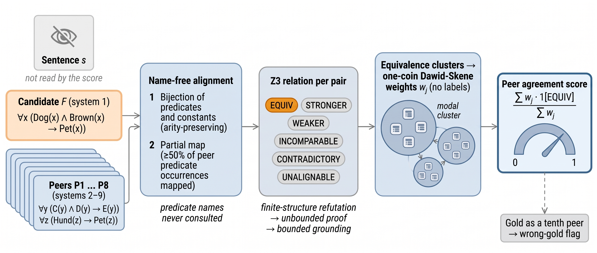

The finding
The question. An LLM turns a sentence into first-order logic. There is no gold formula. Can you tell whether the formula says what the sentence says?
Let nine LLMs formalize the same sentence. Score each formula by the reliability-weighted share of the other eight that an SMT solver proves logically equivalent to it, after matching symbols by structure alone. This is the . It never reads the sentence or a predicate name.
0.827
AUROC on 450 fresh sentences under blinded panel labels, against 0.791 for a gemini-2.5-flash judge.
Under the gap widens (0.874 against 0.727). The score is a complement to a judge, not a replacement: stacked on judge, roundtrip and structural scores it adds +0.033 (95% CI [−0.001, 0.066]), it ties , and it drops below chance when most systems share an error. Switch the subset to see that last point happen.
Does it beat the judge, and does that hold everywhere?
AUROC is recomputed from the recorded scores at each change. The baseline is the . AUROC under uses the raked sampling weights stored with each panel item. Roundtrip NLI exists only for 272 rows, so its bar uses its own n.
How it works
What happens to one real sentence? Step through how the score of one output is computed, with the relations, maps and weights the run recorded for this sentence.

Explore the evidence
Browse the 4,050 fresh outputs
What does the score do to one case? Filter the outputs, pick one, and read the sentence, the candidate, the audited gold, the score, the judge and both labels side by side.
Complexity strata
Does the lead hold as sentences get harder? Panel-label AUROC of the score and the judge per stratum of one complexity feature.
Vocabulary renderings
Does the score just reward conventional names? Compare it with and the . The score here runs without . The same faithful formulas and 739 operator mutants are rendered four ways, on 223 development sentences (constructed truth).
Try it
Can I run the score myself? Its last step is exact arithmetic over the recorded solver relations, so the page recomputes it. Pick any fresh sentence, remove peers or switch to uniform weights, and watch each output's score move. With all nine systems and the fitted weights, the recomputed score equals the recorded one.
What if you flag the lowest-scoring outputs?
If I can only review a fixed share of outputs, which score picks better ones to review? Flag the lowest-scoring share by each score and count how many flagged outputs are really unfaithful. Ties at the cut-off are counted at their expected value under a random tie-break.
Where it fails
Agreement cannot see a mistake that most peers make. On the fresh set, panel items whose sentence has an unfaithful modal cluster (61 items) drop the score to 0.419 AUROC while the judge holds 0.786.
The dose test
How many shared errors does it take? On 200 development sentences, k of the eight peers were replaced by renamed copies of a . Detection is the probability that the faithful formula scores above the mutant.
Long legal definitions
Does it survive text rich in exceptions? Weighted AUROC on 655 legal candidates labelled by the panel from the sentence alone, by count of exception and condition markers.
Shared error in real development data
Does the dose curve show up without constructed mutants? of the agreement score, by the share of peer weight held by clusters with the wrong meaning (6,772 faithful × unfaithful pairs in 508 development sentences).
What the paper does not show
- Thin increment. Under panel labels the gain over judge, roundtrip and structural scores is +0.033 with a 95% interval of [−0.001, 0.066]. It is significant only under a directional test, and the fresh panel has 256 items (Kish effective sample size 202).
- No gain over an existing estimator. Peer agreement does not beat binary Dawid–Skene agreement on panel labels (−0.003), and its gain over majority clustering comes from reliability weighting.
- LLM labels. Panel labels are LLM judgments, with Cohen κ = 0.57 against human corrections on MALLS. No human adjudication was used. On legal text κ falls to 0.17 on sentences with four or more markers.
- Substituted and missing baselines. Roundtrip baselines on the fresh and legal sets used a local Qwen3-8B back-translation. The frontier judge was not run on fresh items. GenV, FormalAlign and the relabelling framework of Brunello et al. were not benchmarked.
- Operating conditions. The score needs several independent systems per sentence and cannot score a lone output beyond what self-consistency gives (0.842 against 0.843 on fresh panel items).
- Signal between sentences. On development solver labels, shuffling labels within sentences leaves the score at 0.70 AUROC against a true 0.82, so much of its item-level AUROC separates easy from hard sentences.
- Error types. No reference-free method in the study named real error types better than always predicting the most frequent type; the strength profile named the panel's primary error for 12.2% of fresh unfaithful items against 25.5% for always answering "added condition".